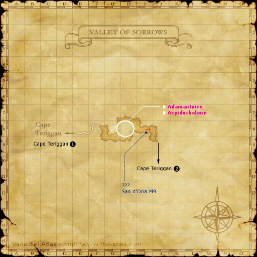
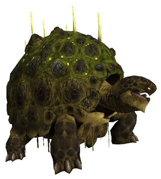
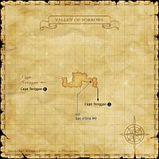

Description
Valley of Sorrows is an outdoor area in Vollbow.
Map

Involved in Quests / Missions
| Quest / Mission | Type | Starter | Location |
|---|---|---|---|
| Beat Around the Bushin | General | Vola | Lower Jeuno (pos=J-8) |
Notorious Monsters
| Name | Level | Drops | Steal | Family | Spawns | Notes |
|---|---|---|---|---|---|---|
| Adamantoise | 72-74 | Adamantoise Shell Adaman Ore Heavy Cuirass Sipar | — |  AdamantoisesImage source | — | A, H |
| Aspidochelone | 85-88+ | Adamantoise Egg Adamantoise Shell Adaman Ingot Adaman Ore Heavy Cuirass Sipar Aquarian Abjuration: Body Martial Abjuration: Feet Wyrmal Abjuration: Body | — | AdamantoisesImage source | — | A, T(H); Horizon-specific variant |

Regular Monsters
| Name | Level | Drops | Steal | Family | Spawns | Notes |
|---|---|---|---|---|---|---|
| Velociraptor | 66-69 | Raptor Skin | — |  RaptorsImage source RaptorsImage source | 16; Respawn:5 minutes | A, H, Sc |
| Peryton | 69-72 | Giant Bird Feather Giant Bird Plume | — |  RocsImage source RocsImage source | 9; Respawn:5 minutes | A , S |
| Valley Manticore | 72-74 | Manticore Fang Manticore Hair Manticore Hide | — |  ManticoresImage source ManticoresImage source | 3; Respawn:5 minutes | A, L, S, Sc |
References
External references describe their own server or retail rules. Documented Zenith changes take precedence.
Map credits: Map 1 — HorizonXI Wiki. Original game maps © SQUARE ENIX; redrawn maps retain the credited authorship and license.

Additional level-75 reference


Map Acquisition
|
This small secluded area, accessible only from Cape Teriggan, is home to the Adamantoise, mammoth reptiles which are a rare sight for any adventurer. Only a handful of these creatures are known to exist in Vana'diel. |
Connecting Areas
- Cape Teriggan at (E-8, J-9)
Involved in Quests/Missions
|
Quest |
Type |
Starter |
Location |
| Beat Around the Bushin | General | Vola | Lower Jeuno (J-8) |
| Mission | Country | Starter | Location |
| San d'Oria Mission 9-1:Breaking Barriers | San d'Oria | San d'Orian Gate Guard | San d'Oria |
NPCs Found Here
|
Weather
| ||||||||||||||
Notorious Monsters Found Here
|
Name |
Level |
Drops |
Steal |
Family |
Spawns |
Notes | |||||||
| Adamantoise | 72 - 74 | Adamantoise | 1 | ||||||||||
| Aspidochelone | 85 - 88 | Adamantoise | 1 | ||||||||||
|
HP = Detects Low HP; M = Detects Magic; Sc = Follows by Scent; T(S) = True-sight; T(H) = True-hearing JA = Detects job abilities; WS = Detects weaponskills; Z(D) = Asleep in Daytime; Z(N) = Asleep at Nighttime | |||||||||||||
Mobs Found Here
|
Name |
Level |
Drops |
Steal |
Family |
Spawns |
Notes | |||||||
| Peryton | 69 - 72 | Roc | 9 Respawn:5 minutes |
A , S | |||||||||
| Valley Manticore | 72 - 74 | Manticore | 3 Respawn:5 minutes |
A, L, S, Sc | |||||||||
| Velociraptor | 66 - 69 | Raptor Skin | Raptor | 16 Respawn:5 minutes |
A, H, Sc | ||||||||
|
HP = Detects Low HP; M = Detects Magic; Sc = Follows by Scent; T(S) = True-sight; T(H) = True-hearing JA = Detects job abilities; WS = Detects weaponskills; Z(D) = Asleep in Daytime; Z(N) = Asleep at Nighttime | |||||||||||||
Adapted from Eden Wiki: Valley of Sorrows · Contributors and history · CC BY-SA 4.0. Revision 45910. Layout, links and optional background text adapted for Zenith.